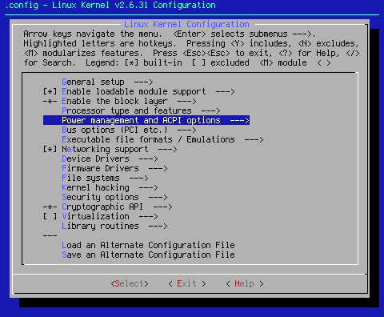
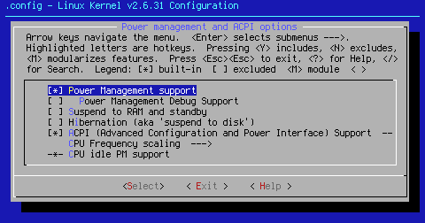
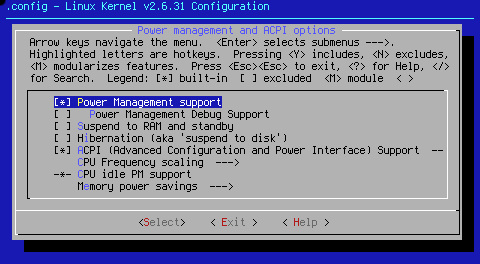

Custom Search
This page is going to specifically cover Power management and ACPI options --->.

Arrow key down to the area shown. When you hit <Select> at this point, you will bring up one of two pages, depending on whether you're running x86 or x86_64:

x86

x86_64
[*] Power Management support
Power management support is a very good idea. It allows you not only to power down the entirety of your machine, but also allows you to control power to individual components (CPU, drives, etc). Power management is very important for laptop computers that spend any time running on their batteries. This option must be turned on in order to control the computer's power system. X also likes having this option turned on as well. For those reasons, this setting defaults to on.
[ ] Power Management Debug Support
Use this setting if you are having power management issues, such as suspend issues, and desire to know the reason. This setting defaults to off.
[ ] Suspend to RAM and standby
This setting allows the system to enter a sleep state where all but the memory circuitry is powered down, thus preserving the memory contents. Since this setting is unneeded for system operation, it defaults to off. If you desire this option, turn it on, as well as numerous sub-settings.
When selected, this option opens a sub-option: < > APM (Advanced Power Management) BIOS support (NEW) --->
APM BIOS is quite antiquated. It can be found on older i486 and Pentium laptops. If you don't have a machine of these types, don't turn the option on. Since this is obsolete tech, this option defaults to off.
[ ] Hibernation (aka 'suspend to disk')
When opened, this option also turns on < > APM (Advanced Power Management) BIOS support (NEW) --->, and ( ) Default resume partition (NEW). The latter setting allows you to tell the computer where to find the suspended image upon reboot. While there are many people who desire this, it is out of the paradigm of a kernel seed since it neither aids speed or stability. In most cases, it adds instability. For these reasons, these associated settings default to off.
[*] ACPI (Advanced Configuration and Power Interface) Support --->
When you <Select> this option, you get numerous sub-options.
[*] Deprecated /proc/acpi files
This setting is actually best turned on. There are still many programs that look for /proc/acpi/ files. If they don't exist, the package in question will not function correctly. Since there are still packages that use this setting, it defaults to on.
[*] Deprecated power /proc/acpi directories
Once again, since there are still programs out there that use /proc/acpi, this setting defaults to on.
[*] Future power /sys interface
This setting allows use of the /sys interface. Newer packages use this setting, so it defaults to on.
[*] Deprecated /proc/acpi/event support
This is a must have setting for X. The user space daemon, acpid, reads /proc/acpi/event, and handles all ACPI generated events. Some of these include adding functionality to the power button, sleep buttons (if applicable), and laptop lid switches. You need to emerge acpid in order to have the above switches and options function correctly. This option defaults to on. Changing it is not recommended.
< > AC Adapter
< > Battery
These settings allow the battery and AC adapter to be seen by the computer. For laptop owners, these are must have settings. They default to on in Tuxonice seeds, since those kernels are used mostly for laptops. These settings default to off in all other source seeds, but are highly recommended for use with laptop machines.
<*> Button
This setting specifically controls the power, sleep, and laptop lid switches. It is highly recommended for people with ATX based computer motherboards. Since all modern machines are based on ATX, this is another must have. This setting defaults to on.
<*> Video
This setting implements ACPI extensions for display adapters. This is very important as it allows the display adapter to read the EDID information from the monitor, and to set the video card for maximum resolution. This setting defaults to on. Changing it is not recommended.
< > Fan
This setting supports ACPI fan devices, allowing the user basic fan control. Since most cooling fan feedback control circuits run just fine on their own, and a misconfigured fan setup could cause serious harm to the CPU, this setting defaults to off. Turning it on not recommended.
-*- Dock
This setting is hard wired to on. According to < Help >,"This driver supports ACPI-controlled docking stations and removable drive bays such as the IBM Ultrabay and the Dell Module Bay." Even so, I have yet to run into a machine that needs this support. This setting is hard wired on in kernel.
<*> Processor
This setting allows the CPU to enter power saving modes C2 and C3. For those who wish to control the speed and power consumption of their CPU, this is the setting. This setting defaults to on even though I don't directly use it.
<*> Thermal Zone
According to < Help >,"This driver supports ACPI thermal zones. Most mobile and some desktop systems support ACPI thermal zones. It is HIGHLY recommended that this option be enabled, as your processor(s) may be damaged without it." This setting defaults to on for this reason. Turning this option off is not recommended.
x86 (0) Disable ACPI for systems before Jan 1st this year
This setting allows you to disable ACPI. It's use is not recommended. The default for this setting is (0), or off. There are far better ways to shut off ACPI support.
[ ] Debug Statements
Turn this setting on if you wish to debug your ACPI setup. This setting defaults to off. Turn it on if you have ACPI issues.
< > PCI slot detection driver
According to < Help >," This driver creates entries in /sys/bus/pci/slots/ for all PCI slots in the system." While this can solve multiple IRQ PCI issues, its use is not recommended, and it defaults to off.
< > Container and Module Devices (EXPERIMENTAL)
According to < Help >, "This helps support hotplug of nodes, CPUs, and memory." Since I don't support or advocate such things, this setting defaults to off. 11-29-2010
< > Smart Battery System(EXPERIMENTAL)
This is supported by certain laptops. Since mine is not one of those, and since the standard battery settings work quite well, this setting defaults to off.
Move to < Exit > to return to the main menu.
CPU Frequency scaling --->
When you <Select> this option, you get numerous sub-options. There are different settings for x86 and x86_64.
[*] CPU Frequency scaling
This setting allows you to change the clock frequency of your CPU on the fly. I don't personally run my CPU's at anything less than full speed. Those who wish to use this option will have to turn on various governors as well. This setting defaults to on for user convenience.
[ ] Enable CPUfreq debugging
Turn this setting on if you are having issues with CPU frequency scaling or one of the governors. This setting defaults to off.
<*> CPU frequency translation statistics
According to < Help >,"This driver exports CPU frequency statistics information through sysfs file system." This setting was turned on for experimentation purposes. It will most likely be turned off in future seed iterations. For now, this setting defaults to on.
[ ] CPU frequency translation statistics details
This setting is an adjunct to the setting above. It defaults to off.
Default CPUFreq governor --->
<Select> this setting, and you will get the following options:
(X) performance
( ) userspace
( ) ondemand
( ) conservative
Since speed is a concern with the kernel seed, this setting defaults to the performance governor. If you wish to modify this setting, you may.
Move to < Exit > to return to the main menu.
-*- 'performance' governor
< > 'powersave' governor
< > 'userspace' governor for userspace frequency scaling
< > 'ondemand' cpufreq policy
< > 'conservative' cpufreq governor
This setting shows the selected default governor, and also lists the available governor options. The default for this setting is the -*- 'performance' governor
*** CPUFreq processor drivers ***
<*> ACPI Processor P-States driver
According to < Help >,"This driver adds a CPUFreq driver which utilizes the ACPI Processor Performance States. This driver also supports Intel Enhanced Speedstep."
This setting defaults to on for consistency. Under it are several choices for CPU's. They are as follows:
x86:
< > AMD Mobile K6-2/K6-3 PowerNow!
< > AMD Mobile Athlon/Duron PowerNow!
< > AMD Opteron/Athlon64 PowerNow!
< > Cyrix MediaGX/NatSemi Geode Suspend Modulation
< > Intel Enhanced SpeedStep (deprecated)
< > Intel Speedstep on ICH-M chipsets (ioport interface)
< > Intel SpeedStep on 440BX/ZX/MX chipsets (SMI interface)
< > Intel Pentium 4 clock modulation
< > nVidia nForce2 FSB changing
< > Transmeta LongRun
< > VIA Cyrix III Longhaul
< > VIA C7 Enhanced PowerSaver (DANGEROUS)
*** shared options ***
x86_64:
< > AMD Opteron/Athlon64 PowerNow!
< > Intel Enhanced SpeedStep (deprecated)
< > Intel Pentium 4 clock modulation
*** shared options ***
Choose only the options that apply to your system. Selecting options that don't apply to your system can cause all manner of trouble, not the least of which is instability. I have seen this done in many peoples' .configs. There is no default for this group of settings.
Move to < Exit > to return to the main menu.
-*- CPU idle PM support
According to < Help >,"If you're using an ACPI-enabled platform, you should say Y here." Who can argue with that?
x86_64 Memory power savings --->
<Select> this setting, and you will get the following options:
< > Intel chipset idle memory power saving driver
This setting only applies to certain Intel server chipsets, such as the Intel 7300. Since this is a special case, one shot sort of setting, it defaults to off. Turn it on if you have such a system.
It's now time to move on to page 5.
Cheers,
Pappy